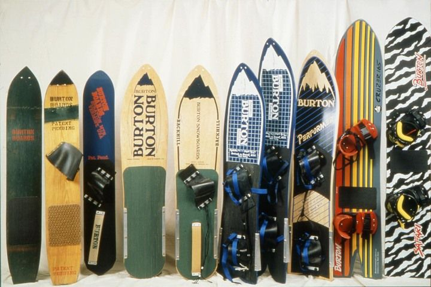

Snowboarding's origin is an exciting and interesting history.
This page will recount it's history and how it has evolved from a niche
winter sport into a global phenomenon.

Early Beginnings (The 0s-1930s):
Ancient Snow Rides: The concept of sliding on snow can be traced back thousands of years. Cultures in regions with heavy snowfall, such as the Inuit and the people of Scandinavia, used sled-like devices to travel across snow-covered landscapes.
These early forms of snow travel are considered the ancestors of modern snowboarding.
The 1920s: idea of strapping one's feet to a board to slide down snow-covered hills began to
take form in the early 20th century. In 1929, Sherman Poppen created the "snurfer,"
a toy for his daughter that resembled a snowboard but without bindings.
This marked the first real precursor to modern snowboarding.
The Birth of Modern Snowboarding (1960s-1970s):
The 1960s: surfing culture began influencing snowboarding.
Early enthusiasts like Tom Sims and Jake Burton Carpenter started experimenting
with designs that would resemble the modern snowboard. Burton is particularly
famous for creating the first commercially viable snowboard in the mid-1970s.
1970s: Jake Burton's company (Burton Snowboards) was founded in 1977 and became a
pioneer in making snowboards more functional. Burton's innovations,
like adding bindings to the board, made the sport more accessible and
paved the way for it to evolve.
The Rise of Snowboarding (1980s-1990s):
1980s: Snowboarding began gaining popularity in the 1980s,
particularly in the United States. Ski resorts started to open their
slopes to snowboarders, although there were initial controversies and
resistance from ski communities. The First Competitions: Snowboarding
competitions were held in the mid-1980s, with events like the National
Snowboard Championships beginning to take shape.
1990s: Snowboarding hit the mainstream, with brands like Burton, Mervin
Manufacturing, and others driving innovation and style. This period saw
The first snowboarding-specific resorts and terrain parks being built.
The Winter Olympics: Snowboarding made its Olympic debut in 1998 at the
Nagano Winter Games, with events like halfpipe and giant slalom officially
entering the competition.
Snowboarding in the Modern Era (2000s-Present):
X Games & Popular Culture: The X Games became a significant platform for
snowboarding in the 2000s, showcasing riders like Shaun White and Travis Rice
who would go on to define the sport for new generations.
Snowboarding & Innovation: Today, snowboarding continues to evolve,
with advancements in board technology, rider performance, and terrain
park design. The sport is now more accessible than ever, with snowboarding
schools and beginner-friendly resorts worldwide.
The Current Scene: Snowboarding has become a global sport, with millions of
\enthusiasts worldwide. Snowboarders can be found in top competitions, like
the Winter X Games, Winter Olympics, and in a thriving backcountry community.